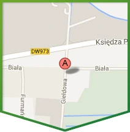
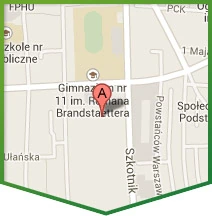
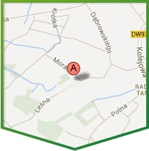

Salon Tarnów-Chyszów
ul. Giełdowa 5 (przy placu targowym Chyszów), 33-100 TarnówPn–Pt 9–17 · Sb 9–13 · niedz. zamknięte
Nawiguj w Google Maps ↗W punkcie na ulicy Giełdowej 5 w Tarnowie przy placu targowym Chyszów posiadamy profesjonalną ekspozycję okien plastikowych PCV, gdzie wszystkie okna zamontowane są w ściankach montażowych dzięki czemu prezentujemy różnorodne systemy i materiały montażowe.

Pn–Pt 9–17 · Sb 9–13 · niedz. zamknięte
Nawiguj w Google Maps ↗
Pn–Pt 9–17 · Sb 9–13 · niedz. zamknięte
Nawiguj w Google Maps ↗
Pn–Pt 9–17 · Sb 9–13 · niedz. zamknięte
Nawiguj w Google Maps ↗W punkcie na ulicy Giełdowej 5 w Tarnowie przy placu targowym Chyszów posiadamy profesjonalną ekspozycję okien plastikowych PCV, gdzie wszystkie okna zamontowane są w ściankach montażowych dzięki czemu prezentujemy różnorodne systemy i materiały montażowe.
Szczególnie zapraszamy do obejrzenia i porównania obu systemów okien balkonowych przesuwnych – uchylno-przesuwnych z automatem wspomagającym otwieranie i domykaniem skrzydła przesuwnego Patio Z oraz najbardziej ekskluzywnych i funkcjonalnych podnośno-przesuwnych HST z niskim progiem.
Prezentujemy różnorodne dodatki okienne: ukryte zawiasy, hamulec w klamce do okien balkonowych i nie tylko, niski próg do drzwi balkonowych, okucia antywłamaniowe, różnego rodzaju klamki okienne i wiele innych.
Na ekspozycji posiadamy również rolety zewnętrzne w systemach podtynkowych oraz natynkowych, drzwi zewnętrzne i wewnętrzne oraz asortyment dodatkowy, jak parapety, kamienie naturalne, moskitiery czy rolety wewnętrzne.